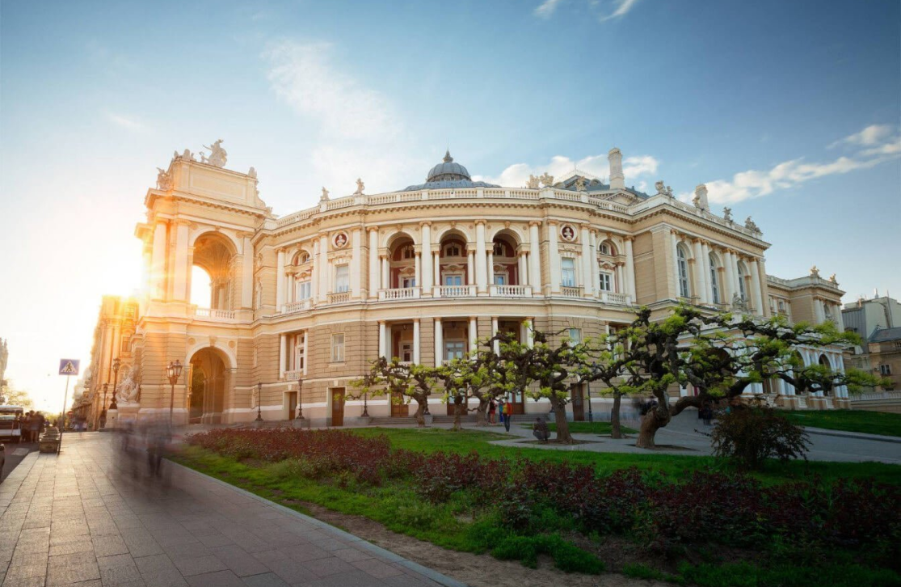
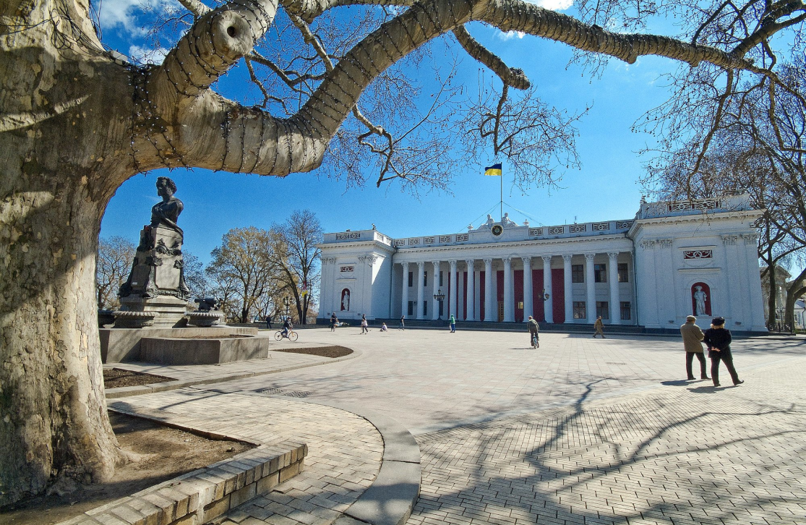
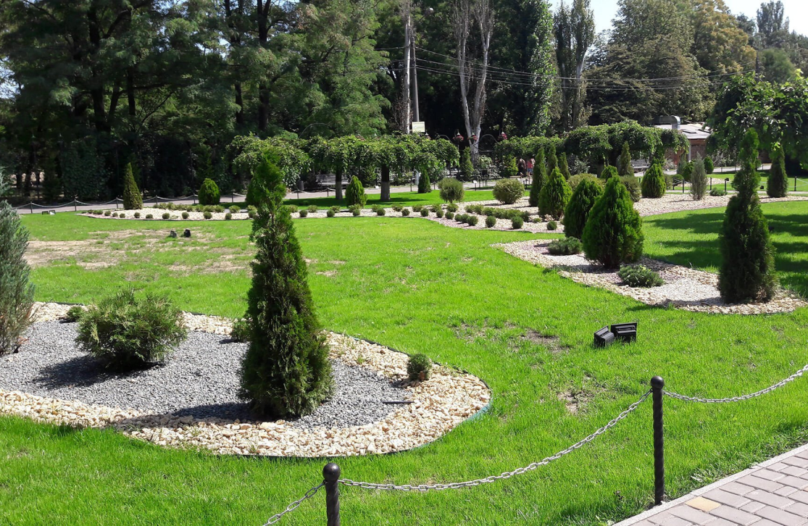

Одеса

Оперний театр
Одеський національний академічний театр опери та балету – перший театр в Одесі за часом спорудження, значенням і популярністю.
Театр побудували на початку XIX століття за ініціативи тогочасного градоначальника герцога де Рішельє і за проектом італійця Франческо Фраполлі.
Герцог хотів за допомогою музики об'єднати усі верстви населення Одеси. Спочатку у театрі виступала російська драматична трупа князя Олександра Шаховського, але незабаром їх витіснила італійська опера.
Архітектура будівлі та внутрішнє оздоблення дійсно красиві, але хто з туристів або навіть городян може похвалитися тим, що був всередині? Радимо обов'язково замовити екскурсію або просто купити квиток на найближчу виставу.

Думська Площа
Думська Площа ̶ найменша площа Південної Пальміри. Але якщо одеситам потрібно зібратися на яке-небудь святкування (будь то Новий Рік або Масляна), відзначити відкриття «Гуморини» або ж донести громадську позицію до міської влади, то це тільки тут.
Площа знаходиться в історичному центрі Одеси, біля Стамбульського парку. Вперше на мапі міста вона з'явилася в 1836 році, але під назвою Біржова. Це було перше її ім'я. Всього у площі їх було 5: вони то змінювалися, то поверталися. Думською вона ставала 3 рази: вперше в 1866 році і ось остаточно в 1994 році. При чому, Біржовою і Думською її називали на честь однієї і тієї ж будівлі. У 1834 році тут побудували будівлю купецької біржі, спроектовану в античному стилі архітектором Боффо, зараз відому нам як будівля Міської Ради. Справа в тому, що незабаром після відкриття приміщення облюбувала муніципальна влада. Відповідно, перейменували і саму будівлю, і площу.

Парк Горького
Парк Горького – один з наймолодших парків Одеси. Офіційно відкритий у 1973 році. Тут понад 6000 дерев, зона атракціонів, кінотеатр «Москва», на території встановлено пам’ятник Горькому, а також жертвам фашизму.
Колишня назва – парк імені В. І. Леніна. Головна визначна пам'ятка – великі штучні стави, у яких водиться риба, а на час зими вони стають катками. Саме у цьому парку знімалися сцени фільму «Пригоди Електроніка» (зокрема, епізод, у якому Електронік хвацько розправляється з хуліганами, які намагаються образити Майю, таємну любов Сироїжкіна; тут же постійно ховався Уррі). Через дорогу від парку Перемоги знаходиться площа 10 Квітня. У центрі площі стоїть обеліск на честь міста-героя Одеси, де увічнено указ Президії Верховної Ради СРСР про присвоєння місту звання «Міста-героя».